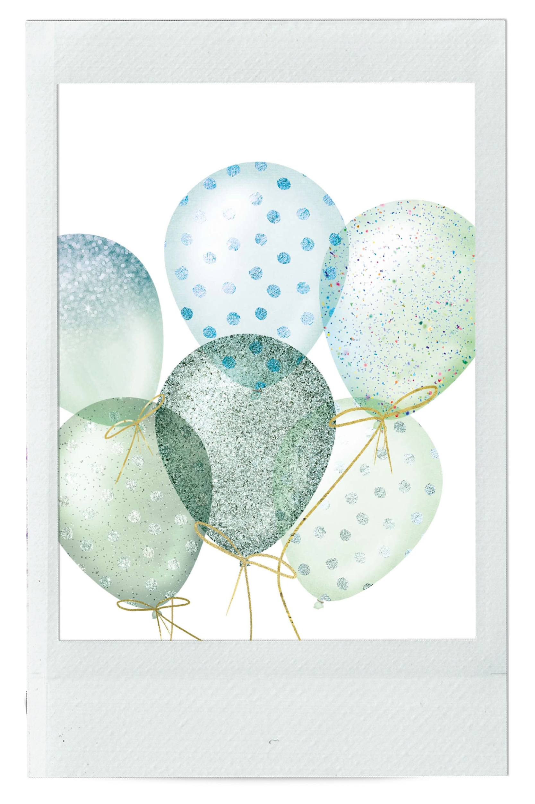

Gift from India

TNW: Infancy

Little trinket

Blue art

Blue bathroom

Balloons

Bracelet

. . .
Traditionally we might get something blue to wear on our wedding day but we love that this colour symbolises loyalty, wisdom and calmness. Click on cards to reveal the stories
behind objects!
Gift from India
TNW: Infancy
Little trinket
Blue art
Blue bathroom
Balloons
Bracelet
. . .
Gift from India — Lydia
The Ninth Wave was a Glasgow-based post-punk band that I have been following pretty much since their early gigs. There is something special about the sound of The Ninth Wave — it is complex, emotional, deep, and powerful. I saw them live many times and was always treated to an exceptional performance. "Infancy" was their debut album, released in two separate parts as a protest against fast music consumption. It would be hard to pick the best track — each song is such a unique story! (Well, maybe "Sometimes the Silence is Sweeter" was my first love.) It was really sad to hear when, a couple years back, the band announced they were going their separate ways to work on solo projects. Even though each member had so much to give and they are all super talented, we, the fans, missed seeing them all on stage together.
Actually, we got another chance to dance to their tunes again this spring when The Ninth Wave reunited for a one-off show in Glasgow! The gig felt very special, and I bought this particular LP that night from their merch stand. I would say this music encompasses my experience of living in Glasgow; it is like a soundtrack for this stage of my life. Another fun fact — there is a song called "Abattoir" from their other album, "Happy Days!" — and I briefly appear in its video clip. The band reached out to fans some time ago to send visual content they could use, and they included my contribution. Go check them out; you will see why I am so excited. — Dominyka
This little trinket is what happens when you think you didn't buy enough souvenirs while standing in the airport souvenir shop waiting for your flight. Bought this beautifully crafted tiny sized bowl after a well deserved week beach vacay in Sardinia. The beaches were amazing and I can always justify this purchase by choosing to eat pistachios in this otherwise ridiculously small bowl. It's important to find purposes for things my friends. — Niki
The blue art — among the first thing I stole from my partner when we first started dating, it made me calm, even in the winter and summer, I look it and I just imagine how peaceful my world is (even if it isn't); it is so blue and that's so peaceful and calm.
— Christabel
The current state of my very blue bathroom! We bought a house needing a lot of renovations, and unfortunately as the bathroom was in the best condition, it will be the last room to have any decorations! — Lucy
The balloons represent something blue. This was a celebration of the first year of life for my baby. A very special moment during some very uncertain times. — Lucy
This bracelet, with a simple yet beautiful design, is a souvenir from Tanzania. My family and I travelled to Tanzania a few years ago and enjoyed a wonderful time surrounded by stunning nature and kind people. We went to a market where people showcased their lovely hand made jewellery and I immediately fell in love with this blue bracelet. I love wearing it, not only because of its design, but because it reminds of the amazing time I got to spend in Tanzania. — Victoria
If you would like to share "something blue" of
yours, please go here to submit your picture! Don't forget to add your name and a brief description of the object. Once we review, it will be uploaded to
this gallery!